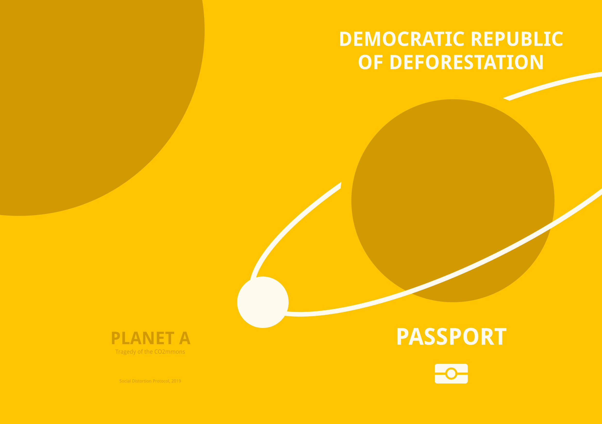
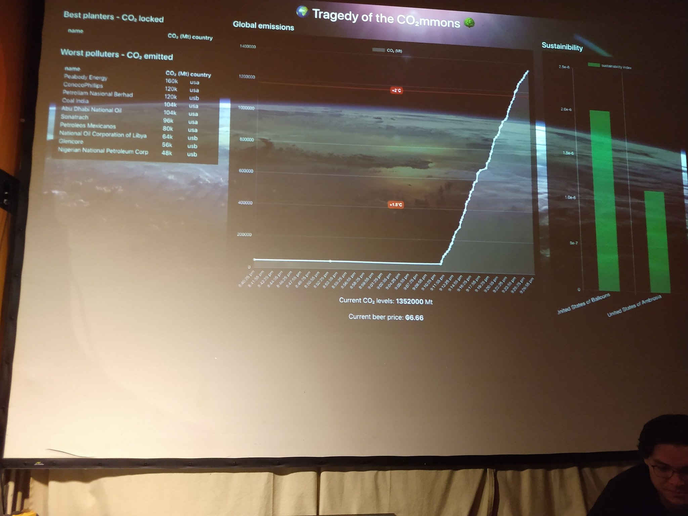
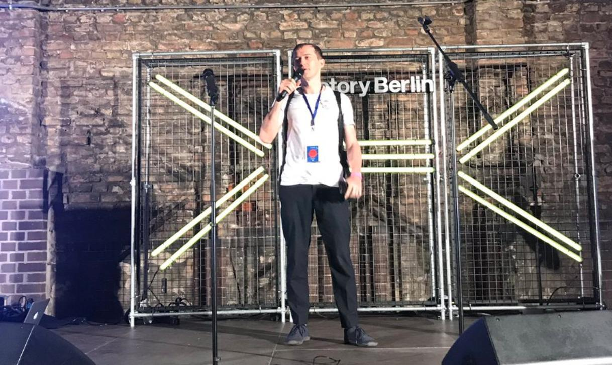
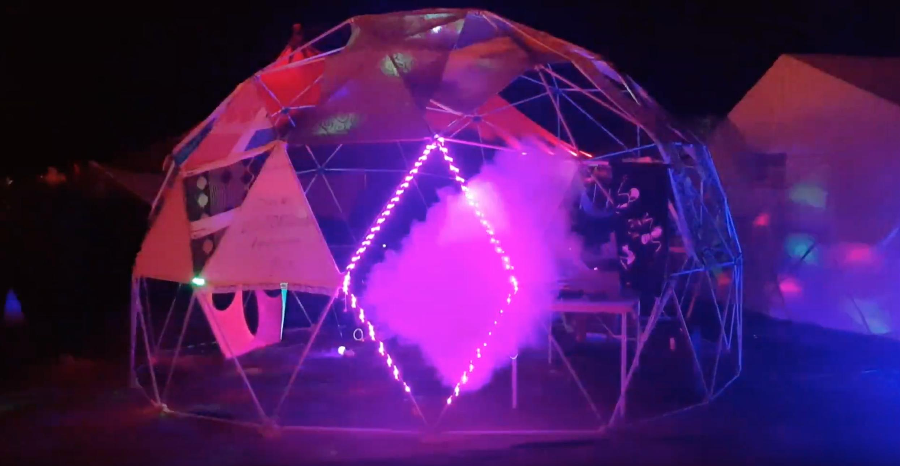

Note: article originally posted in the LeapDAO blog.
Greetings Earthlings!
This is your extra-terrestrial and time-traveling bureaucrat Herr Müller speaking. I’m contacting you today to inform you about the work you and your fellow terrestrials have done on “Planet A” during EthBerlinZwei and Chaos Communication Camp 2019.
As it took me quite some effort to perambulate my time dimension’s administrative processes to send this message via quantum-mail to you, I’d like to ask your full attention when reading the following paragraphs. I’d like to draw particular emphasis on the brief introduction of this quantum-mail, as it’s meant as the whole message’s checksum in the improbable event of the quantum-mail screwing up!
Introduction
In July 2019 of your time we, the Social Dist0rtion Protocol had successfully broadcasted a first message to our earthbound partners LeapDAO. It contained blueprints for a simulation project we internally called Planet A—The Tragedy of the CO₂mmons. We developed the simulation to run on our decentralized network, and we underestimated how behind technology is in 2019. But we got lucky. LeapDAO promptly responded to our q-mail. Their effort to scale Ethereum using Plasma, and the successful launch and deployment of their mainnet, proved us that there you have futuristic technology ready to use. For this reason our engineers agreed to partner with LeapDAO.
The following plan had been outlined: Create a Plapp (Plasma App) to educate and inspire earthlings about the dramatic effects of climate change. In it’s simplest form, the idea behind “Planet A” was to create an economic simulation (or game) that the attendees of EthBerlinZwei and Cccamp19 would join by becoming citizens of six futuristic countries. Those being: Cataclysmia, Democratic Republic of Deforestation, New Smogland, Kingdom of Heatwave, Tornayda and Pollutistan.

Additionally, those countries and their citizens would compete and collaborate as part of a crypto-economical tragedy of the commons game. Each simulatee (or citizen), once receiving their passport through a simple and efficient on-boarding process, was given the exciting capability to “do business” with other citizens. By using the Plapp on their smartphones, players would mark themselves as “business-ready” and generate a one time QRCode. Once scanned (and hence successfully “conducting business”) both players would receive the futuristic crypto-currency “Göllars”. Alas, each business transaction would also emit the greenhouse gas CO₂ to a commonly shared resource called “Air”.
To maximize players’ desire to do business, the blueprints also specified how the in-game currency could be spent. The team chose to back it only by the most essential and finest earthling-cravings. Hence, Göllars-redeemable rewards included: fresh and not-so-fresh popcorn (salted or sweet), Berliner Luft (4cl), and notebooks. While everyone was drawn to eagerly do business to afford more food, alcohol, and notebooks, the global amount of CO₂ would increase. Together with that, the production cost of all goods would increase as well. Players would then find themselves in a “tragedy of the commons” scenario.
Organization
The question that followed next was: how do we fund the development of this elaborate mission? Over night, some members of Social Dist0rtion Protocol came up with a minimal governance system that allowed Planet A contributors to get paid in Social Dist0rtion Protocol tokens. At the same time, a Gitcoin Grant was set up to collect DAI in a multi-signature wallet, co-owned by some of the contributors. With this foundation set, development started.
Software
Starting a software project from scratch is time consuming. Members of LeapDAO had already adjusted Austin Griffith’s xdai.io burner-wallet to work with LeapDAO’s Plasma chain (peep.cash). For this reason it was their obvious choice to fork and adjust the burner-wallet code base for Planet A. On the network side, two contracts called “Earth” and “Air” were created and LeapDAO’s Spending Conditions were used to implement the tragedy of the commons scenario and a prisoner’s dilemma. ERC1948 was used to allow the minting of passports (NFTs) directly on the Plasma chain. A Python backend was set up to log time-series data and to create a dashboard.
Development
The first few weeks of development mainly consistent of meetings to brainstorm ideas and game mechanics. Coincidentally, at the same time the specific idea for “Planet A” arose, one organizer of the Ethereum Berlin Meetup reached out to ask if the team could present and play the game at the meetup. Given that there was only a week left and since no code had been written so far, everyone started hacking feverishly to deliver a working demo for July 24, 2019.
When the day came, the simulation was all but finished. Even though, the “do business” functionality had successfully been implemented and tested. The game was hence presented as a “demo” and so the team’s expectations were low.
July 24 2019, the Ethereum Meetup Berlin
Virtually fixing the last bugs from his laptop while running the presentation, Social Dist0rtion Protocol’s licensed time-traveler Alberto Granzotto was last in giving his talk on Planet A. Upfront, Göllars-redeemable vouchers to buy drinks had been bought, and paper wallets were printed just in time before the event. Eventually, everything was ready.
Right after Alberto’s presentation, the team handed out paper wallets. Attendees, after receiving their new passports, immediately started to “do business”. The simulation had been set up such that each player, after being on-boarded with the paper-wallet, was able to afford exactly one drink at the venue. Most players, however, preferred to first earn some more Göllars, quickly triggering a 1.5 °C increase of the Earth’s temperature. Inflation started to raise making beer a luxury good, only affordable by the most eager players.

Even though much had been improvised up to this point, the Ethereum Meetup on July 24 2019 was a huge success for the team. This boosted moral to deliver something even greater for the main events at the end of August.
EthBerlinZwei and Cccamp19
I’ll spare you most of the details that revolve around finishing the game in the weeks before its final launch. As you might expect though, development became very stressful climaxing in the week before Friday, August 23, 2019, when LeapDAO and Social Dist0rtion Protocol simultaneously launched “Planet A — The Tragedy of the CO₂mmons” at EthBerlinZwei and Cccamp19. In Berlin, each conference badge included a Planet A passport. LeapDAO’s Johann Barbie rep’d the project on stage and encouraged players to do business.

In Ziegeleipark Mildenberg, Social Dist0rtion Protocol set up a geodesic dome designed to host the Planet A embassy. Attendees flocked the premise and, after entering the Ethereum shaped entrance, they got their hands on passports.

Sadly, the two big events didn’t go as smooth as the Ethereum Meetup in July. A very chaotic few days before the launch caused some major bugs to creep into the code base which initially bricked on-boarding for two out of six countries. As the team had done only minor promotion, consisting of a single blog post, most conference attendees weren’t even aware of the simulation’s launch. Though fully featured, it also lacked tutorials, making on-boarding a tiresome one to one process for game masters and players alike. Moreover, there was no deep integration in the pop-up economy of the conferences: players, having only a small choice of non-indispensable goods to buy, preferred to use their Göllars to plant trees, lowering the level of CO₂. This caused the game mechanics to incentivize a really altruistic and eco-friendy behavior, comically saving “Planet A” from its prophesied destruction. Even though significant business was conducted, instead of goods becoming more expensive, the CO₂ concentration in the air dropped to an unseen low, undermining the more apocaliptic (and planned) tragedy of the commons scenario.
Yes, Planet A could have gone better. Everyone did what they could at the events to promote and on-board new players. In the end, LeapDAO’s Plasma testnet recorded a total of 1182 transactions, with 187 active passports sending at least one transaction, with an average of six transactions per passport. One kilogram of popcorn was sold. Some notebooks too. Without surprises though, Berliner Luft was the best-seller. Some additional wins for the team were that:
- Vitalik had been spotted playing the game 😱.
- A Cccamp19 attendee developed a card10 badge app to signal “business-readiness to fellow players”.
- And finally that I, Herr Müller, was asked to give an interview on the game to a podcast (link will be provided once the interview is online).
Conclusion
After a couple of months of strenuous development, models, game-mastering, bug fixing, and post-mortems, this week the team finally settled back into their usual working rhythms. What’s left is a working game and a key learning: simulations like this must have a deep integration with pop-up economies with no compromises. This will be a requirement for when the simulation will be played again. Sadly, what’s also left is a deep hole in our multisig-pockets. The Gitcoin Grant the team had initially set up was able to collect 3,453.25 DAI (Gitcoin is showing an invalid balance) out of a goal of 15,000.00 DAI.
At this point it is also important to mention that the game was never intended to be exclusively played at the forementioned conferences. Quite in contrary, its code and assets are permissively-licensed and freely available on the web and can, at any time, be used by anybody to launch a new instance of “Planet A” for any other event or conference. We would, of course, be more than happy to give our support in cases like these. In my personal opinion, however, it’d be a damn shame if future deployments of the simulation would be hindered by the looming debt-crisis of Social Dist0rtion Protocol multi-signature wallet.
The team of LeapDAO and Social Dist0rtion Protocol would hence like to ask you to consider donating via our Gitcoin Grant to settle its existing debt and eventually even to support the future development of “Planet A — The Tragedy of the CO₂mmons”, Gitcoin will match all donations. We love what we do, but we also love paying rent and your help would be great on this matter ❤️🌳🌍.
Best regards,
Herr Müller and the Planet A team